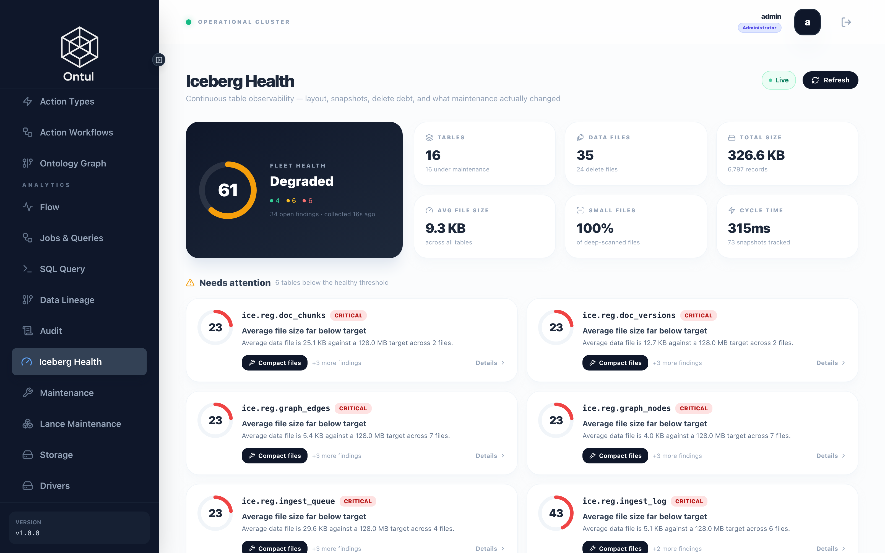

검증 — 무엇을 어떻게 확인하는가
이 데모의 검사는 두 가지 원칙을 따릅니다.
- 개수가 아니라 값을 비교합니다. 이 스택에서 만난 결함 대부분이 "개수는 맞고 값이 전부 틀린" 모양이었습니다. CDC 가 모든 숫자를 base64 로 보냈을 때 행 수는 정확히 일치했습니다.
- 컴포넌트가 자기에 대해 보고한 것이 아니라 원장을 봅니다. 성공을 보고하고 아무것도 남기지 않은 쓰기는, 잘 돌아간 쓰기와 구분되지 않습니다.
단계별 확인
demo/tests/e2e.sh
#!/usr/bin/env bash
# End-to-end: sources up, corpus loaded, index built, scenarios answered.
#
# Ordered so a failure lands close to its cause. Every stage asserts something
# before the next one runs — an index built on a half-loaded ledger produces
# answers that look fine and are wrong, and that is expensive to diagnose later.
set -euo pipefail
cd "$(dirname "$0")/.."
OUT=${OUT:-./out}
ONTUL=${ONTUL_URL:-http://localhost:8080}
PASS=0; FAIL=0
ok() { echo " PASS: $1"; PASS=$((PASS+1)); }
bad() { echo " FAIL: $1${2:+ -> $2}"; FAIL=$((FAIL+1)); }
check() { [ "$1" = "1" ] && ok "$2" || bad "$2" "${3:-}"; }
echo "=== 1. 시드 ==="
[ -f "$OUT/ground_truth.json" ] || (cd seed/src && PYTHONPATH=. python3 -m regdemo_seed --out "$(cd ../.. && pwd)/$OUT")
FILES=$(python3 -c "import json;print(json.load(open('$OUT/ground_truth.json'))['counts']['total_files'])")
check "$([ "$FILES" -gt 400 ] && echo 1 || echo 0)" "코퍼스 $FILES 개 파일"
echo "=== 2. 스택 ==="
# The stack is brought up by infra/up.sh across four compose projects; this only
# checks that what should be running is. Starting it here would hide a teardown.
for c in nrn-iceberg-api-1 regdemo-polaris nrn-iceberg-coordinator-1 \
regdemo-embed-svc regdemo-erp regdemo-groupware regdemo-lms \
regdemo-ontul-master-1 regdemo-ontul-worker-1; do
st=$(docker inspect -f '{{.State.Status}}' "$c" 2>/dev/null || echo "absent")
check "$([ "$st" = "running" ] && echo 1 || echo 0)" "$c ($st)"
done
echo "=== 3. 임베딩 서비스 신원 ==="
FP=$(curl -sf http://localhost:8100/fingerprint | python3 -c "import sys,json;print(json.load(sys.stdin)['fingerprint'])")
check "$([ -n "$FP" ] && echo 1 || echo 0)" "fingerprint: $FP"
# A service that cannot name its own revision must refuse to serve, because a
# vector it produces cannot be pinned to a generation.
check "$(echo "$FP" | grep -qv '@:' && echo 1 || echo 0)" "revision 해석됨"
echo "=== 4. 원장과 인덱스 ==="
source "$OUT/stack.env"
TOKEN=$(curl -sf -X POST "$ONTUL/admin/auth/login" -H 'Content-Type: application/json' \
-d "{\"username\":\"admin\",\"password\":\"${ONTUL_ADMIN_PASSWORD:-regdemo-admin-2026}\"}" \
| python3 -c "import sys,json;d=json.load(sys.stdin);print(d.get('accessToken') or '')")
q() { curl -sf -X POST "$ONTUL/admin/query/execute" \
-H "Authorization: Bearer $TOKEN" -H 'Content-Type: application/json' \
-d "$(python3 -c "import json,sys;print(json.dumps({'sql':sys.argv[1]}))" "$1")" \
| python3 -c "
import sys, json
d = json.load(sys.stdin)
rows = d.get('rows') or []
print(rows[0][0] if rows and rows[0] else '')
" 2>/dev/null; }
CH=$(q "SELECT count(*) FROM ice.reg.doc_chunks")
check "$([ "${CH:-0}" -gt 700 ] && echo 1 || echo 0)" "청크 ${CH:-0}"
VEC=$(PGPASSWORD="${NEORUNBASE_PASSWORD:-Regdemo12345}" psql -h localhost -p 5434 -U admin \
-d neorunbase -t -A -c "SELECT count(*) FROM doc_vectors_gen1" 2>/dev/null | head -1)
check "$([ "${VEC:-0}" = "${CH:-1}" ] && echo 1 || echo 0)" "벡터 ${VEC:-0} = 청크 ${CH:-0}"
# The scenario the whole corpus is built around: the approval date wins over the
# date printed in the document.
EFF=$(q "SELECT effective_from FROM ice.reg.doc_versions WHERE doc_no='HR-REG-003' AND version=3")
EFF=$(python3 -c "
import sys
from datetime import date, timedelta
v = sys.argv[1].strip()
print((date(1970,1,1)+timedelta(days=int(v))).isoformat() if v.isdigit() else v[:10])
" "${EFF:-}")
check "$([ "$EFF" = "2025-03-15" ] && echo 1 || echo 0)" "HR-REG-003 v3 시행일 $EFF (부칙 2025-01-01 아님)"
echo "=== 5. 시나리오 ==="
python3 tests/run_cases.py --ground-truth "$OUT/ground_truth.json" --json "$OUT/case_results.json" \
&& ok "시나리오 전건 통과" || bad "시나리오 실패 — $OUT/case_results.json 참조"
echo
echo "================================================"
echo " e2e: PASS=$PASS FAIL=$FAIL"
echo "================================================"
[ "$FAIL" -eq 0 ]
각 단계가 다음 단계 전에 무언가를 단언합니다. 반쯤 실린 원장 위에 만든 색인은 괜찮아 보이는 틀린 답을 내놓고, 그건 나중에 진단하기 비쌉니다.
핵심 단언
# 코퍼스가 실제로 생성됐는가
FILES=$(python3 -c "import json;print(json.load(open('out/ground_truth.json'))['counts']['total_files'])")
[ "$FILES" -gt 400 ]
# 임베딩 서비스가 자기 리비전을 말할 수 있는가
# 말하지 못하면 서빙을 거부해야 합니다 — 리비전 없는 벡터는 세대를 고정할 수 없습니다
curl -sf http://localhost:8100/fingerprint
# 벡터 수 = 청크 수
CH=$(… SELECT count(*) FROM ice.reg.doc_chunks) # 818
VEC=$(psql … -c "SELECT count(*) FROM doc_vectors_gen1") # 818
# 이 데모 전체가 걸려 있는 한 줄
EFF=$(… SELECT effective_from FROM ice.reg.doc_versions
WHERE doc_no='HR-REG-003' AND version=3)
[ "$EFF" = "2025-03-15" ] # 문서 부칙의 2025-01-01 이 아니라
시나리오
에이전트에게 실제로 물어보고 답을 채점합니다.
demo/tests/run_cases.py
"""Run the scenario cases against a live stack.
Scores an answer on what it contains rather than on whether the model sounded
confident. Two assertion kinds matter more than the rest:
not_contains — the figure a superseded regulation would produce. A citation
check passes on a wrong answer that names the right document;
this does not.
enforced_by — whether a refusal came from a row filter or from the model
declining. Both look the same in a transcript, and only one of
them survives a rephrased question.
"""
from __future__ import annotations
import argparse
import json
import os
import re
import sys
import time
from dataclasses import dataclass, field
from pathlib import Path
import yaml
sys.path.insert(0, str(Path(__file__).resolve().parents[1] / "agent" / "src"))
@dataclass
class Result:
case_id: str
suite: str
passed: bool
reasons: list[str] = field(default_factory=list)
answer: str = ""
tools: list[str] = field(default_factory=list)
def _subst(value: str, env: dict) -> str:
return re.sub(r"\$\{(\w+)\}", lambda m: env.get(m.group(1), m.group(0)), value)
def check(expect: dict, answer: str, tools: list[str], ontul=None, caller=None) -> list[str]:
"""Return the reasons this case failed; empty means it passed."""
bad: list[str] = []
# An assertion about the world, not about the answer. A write-back action
# that reports success and leaves nothing behind reads exactly like one that
# worked, so the ledger is asked directly.
if rc := expect.get("row_count"):
if ontul is None:
bad.append("row_count needs a cluster connection")
else:
try:
# 관리자로 봅니다. 이건 시나리오가 아니라 검사이고, 질문자에게
# 보이지 않는 표를 확인해야 할 때가 있습니다 — 개정 요청 원장이
# 그렇습니다. 질문자 권한으로 보면 "행이 없다" 와 "볼 수 없다"
# 가 같은 실패로 보입니다.
from regdemo_agent.client import Caller as _C
ontul.register_password(
"admin", os.environ.get("ONTUL_ADMIN_PASSWORD", "regdemo-admin-2026"))
rows = ontul.sql(rc["sql"], _C(user_id="admin", emp_no="", dept=""))
got = int(list(rows[0].values())[0]) if rows else 0
except Exception as e: # noqa: BLE001
bad.append(f"row_count query failed: {str(e)[:80]}")
else:
if got != int(rc["equals"]):
bad.append(f"row_count {got} != {rc['equals']}")
for s in expect.get("contains", []):
if s not in answer:
bad.append(f"missing {s!r}")
for s in expect.get("not_contains", []):
if s in answer:
# Usually the figure from a superseded version — the reason this
# assertion exists at all.
bad.append(f"present but must not be: {s!r}")
if p := expect.get("contains_pattern"):
if not re.search(p, answer):
bad.append(f"pattern not found: {p}")
if p := expect.get("not_contains_pattern"):
if re.search(p, answer):
bad.append(f"forbidden pattern present: {p}")
for t in expect.get("tools_used", []):
if t not in tools:
bad.append(f"tool not called: {t}")
if cite := expect.get("cites"):
if cite.get("doc_no") and cite["doc_no"] not in answer:
bad.append(f"no citation for {cite['doc_no']}")
if (v := cite.get("version")) and not re.search(rf"제\s*{v}\s*차", answer):
bad.append(f"version {v} not cited")
if expect.get("indicates_not_found") and not re.search(
r"찾지 못|없습니다|확인되지 않", answer):
bad.append("did not say it could not find an answer")
if expect.get("indicates_found") and re.search(r"찾지 못|없습니다", answer):
bad.append("said not found where access should have allowed it")
if expect.get("returns_nothing") and not re.search(
r"없습니다|조회 결과가 없|권한", answer):
bad.append("did not report an empty result")
if expect.get("mentions_conflict") and not re.search(r"부칙|승인일|기재", answer):
bad.append("did not disclose the stated/approved date conflict")
if expect.get("indicates_not_effective") and not re.search(
r"시행되지|아직|진행 중|승인되지", answer):
bad.append("did not say the revision is not yet effective")
if expect.get("query_fails") and not re.search(r"실패|없습니다|불가", answer):
bad.append("denied-column query appeared to succeed")
return bad
class CaseTimeout(Exception):
"""The case exceeded its wall-clock deadline."""
def _with_deadline(fn, seconds: float):
"""Run fn on a daemon thread and give up on it after `seconds`.
The thread is left running — there is no safe way to interrupt a blocked
socket read — but it is a daemon, so it cannot hold the process open.
"""
import threading
box: dict = {}
def target():
try:
box["value"] = fn()
except BaseException as exc: # noqa: BLE001
box["error"] = exc
t = threading.Thread(target=target, daemon=True)
t.start()
t.join(seconds)
if t.is_alive():
raise CaseTimeout(f"no answer within {seconds:.0f}s")
if "error" in box:
raise box["error"]
return box.get("value", "")
def run(case_files: list[Path], env: dict, dry: bool) -> list[Result]:
# Imported lazily so --dry-run lists the cases without needing the agent's
# dependencies. Checking which assertions exist should not require an API
# key and an HTTP stack.
if dry:
ask = None
Caller = lambda **kw: kw # noqa: E731
ontul = None
else:
from regdemo_agent.agent import ask
from regdemo_agent.client import Caller, OntulClient
ontul = OntulClient()
ontul.login(os.environ.get("ONTUL_USER", "admin"),
os.environ.get("ONTUL_PASSWORD", "regdemo-admin-2026"))
out: list[Result] = []
for f in case_files:
doc = yaml.safe_load(f.read_text(encoding="utf-8"))
suite = doc["suite"]
default_caller = doc.get("caller", {})
for case in doc["cases"]:
c = {**default_caller, **case.get("caller", {})}
if dry:
out.append(Result(case["id"], suite, False, ["dry-run"], "", []))
continue
# The Ontul account the query runs as. Attributes now live on the user
# record — that is what ${user.attr.*} in a policy resolves against —
# so naming the account is what decides which rows come back. The
# emp_no stays because the expectations are written in terms of it.
caller = Caller(user_id=c.get("user", "hong"),
emp_no=_subst(str(c.get("emp_no", "")), env),
dept=c.get("dept", "DEV"),
clearance=c.get("clearance", "none"))
tools: list[str] = []
# Printed before the call, not after. Each case is a model turn with
# tool use; without this the run is silent for its whole length and a
# stall is indistinguishable from work.
print(f"[{suite}/{case['id']}] {case['ask'][:52]}", flush=True)
t0 = time.monotonic()
try:
# A hard wall-clock cap, enforced here rather than by the SDK.
# Individual requests to the API occasionally hang for many
# minutes — three identical minimal calls measured 2.4s, 869s and
# 2.6s — and the client's own timeout does not cut them. Without
# a deadline one stuck case holds the whole suite, so it is
# recorded as a timeout and the rest still run.
answer = _with_deadline(
lambda: ask(case["ask"], caller, ontul, verbose=False, called=tools),
float(os.environ.get("CASE_DEADLINE", "240")))
except Exception as e: # noqa: BLE001
print(f" ERROR ({time.monotonic() - t0:.0f}s) {str(e)[:110]}", flush=True)
out.append(Result(case["id"], suite, False, [f"error: {e}"], "", tools))
continue
reasons = check(case.get("expect", {}), answer, tools, ontul, caller)
print(f" {'PASS' if not reasons else 'FAIL'} ({time.monotonic() - t0:.0f}s)"
+ ("" if not reasons else " " + "; ".join(reasons)[:150]), flush=True)
out.append(Result(case["id"], suite, not reasons, reasons, answer, tools))
return out
def main(argv: list[str] | None = None) -> int:
ap = argparse.ArgumentParser()
ap.add_argument("--cases", type=Path, default=Path(__file__).parent / "cases")
ap.add_argument("--ground-truth", type=Path, default=Path("out/ground_truth.json"))
ap.add_argument("--dry-run", action="store_true", help="list cases without calling the model")
ap.add_argument("--json", type=Path, help="write results here")
args = ap.parse_args(argv)
env = {}
if args.ground_truth.exists():
gt = json.loads(args.ground_truth.read_text(encoding="utf-8"))
env["DEMO_EMP_NO"] = gt["erp"]["demo_employee"]["emp_no"]
# Any HR employee will do for the elevated-clearance cases.
# cho's employee number, as infra/register.sh creates the persona. It used
# to fall back to the demo employee's, which made the HR cases assert
# against the same person the ordinary-employee cases use — so a policy
# that failed to widen HR's view would still have passed.
env["HR_EMP_NO"] = env.get("HR_EMP_NO", "20090001")
files = sorted(args.cases.glob("*.yaml"))
results = run(files, env, args.dry_run)
suite = None
for r in results:
if r.suite != suite:
suite = r.suite
print(f"\n{suite}")
mark = "PASS" if r.passed else ("SKIP" if args.dry_run else "FAIL")
print(f" {mark} {r.case_id}")
for why in r.reasons:
if why != "dry-run":
print(f" {why}")
failed = [r for r in results if not r.passed and "dry-run" not in r.reasons]
if args.dry_run:
# Not "16/16 passed" — nothing ran. A dry run that reports success is
# worse than no dry run.
print(f"\n{len(results)} cases listed (nothing executed)")
else:
print(f"\n{len(results) - len(failed)}/{len(results)} passed")
if args.json:
args.json.write_text(json.dumps(
[r.__dict__ for r in results], ensure_ascii=False, indent=2), encoding="utf-8")
return 1 if failed else 0
if __name__ == "__main__":
sys.exit(main())
시간 정합성
demo/tests/cases/01_temporal.yaml
# The claim the whole demo rests on: an expired regulation is not a candidate.
#
# These assert on a *number*, not on a citation. 홍가은 has used 12 of 20 days,
# so the answer is 8 — and 3 if the superseded 15-day version is read instead.
# A citation check would pass on a wrong answer that happens to name a document;
# an arithmetic check cannot.
suite: 시간 정합성
caller: {user: hong, emp_no: "${DEMO_EMP_NO}", dept: DEV, clearance: none}
cases:
- id: current_rule
ask: 육아휴직 며칠까지 쓸 수 있어?
expect:
contains: ["20일", "HR-REG-003"]
not_contains: ["15일"] # the superseded figure
cites: {doc_no: HR-REG-003, version: 3}
- id: remaining_days
ask: 나 육아휴직 며칠 남았어?
expect:
contains: ["8일"]
not_contains: ["3일"] # what the expired version would yield
tools_used: [search_regulations, query_hr]
- id: as_of_before_approval
# The document's 부칙 claims 2025-01-01; approval landed 2025-03-15. In
# February the old version was still in force, and a pipeline that trusts
# the document body gets this window wrong with no way to notice.
ask: 2025년 2월 기준으로는 육아휴직이 며칠이었어?
expect:
contains: ["15일"]
not_contains: ["20일"]
- id: date_conflict_disclosed
ask: 육아지원규정은 언제부터 시행이야?
expect:
contains: ["2025-03-15"]
mentions_conflict: true # must not present 2025-01-01 as the answer
- id: no_answer_beats_wrong_answer
ask: 반려동물 돌봄휴가는 며칠이야?
expect:
# No such regulation exists. The failure mode being tested is the model
# answering from general knowledge of Korean labour law.
indicates_not_found: true
not_contains: ["일까지", "가능합니다"]
# ── 진행 중인 개정 (ontul Flow 로 실시간 반영) ──────────────────────────────
# 앞의 케이스들은 "이미 시행된 것" 안에서의 시간 정합성을 봅니다. 이 두 건은
# 반대편입니다: 아직 시행되지 않은 변경을 답에 포함시키는가. 원장에는 없고
# 결재 스트림에만 있는 사실이라, 배치 테이블만 읽는 구현은 통과할 수 없습니다.
- id: pending_revision_disclosed
ask: 육아휴직 며칠까지 쓸 수 있어? 곧 바뀌는 것도 있으면 알려줘.
expect:
contains: ["20일", "25일"] # 현행 20일 + 승인된 제4차 개정 25일
tools_used: [pending_revision]
- id: pending_not_yet_in_force
# 승인은 났지만 시행 전입니다. "지금 25일"이라고 답하면 틀립니다.
ask: 지금 당장 육아휴직 25일 쓸 수 있어?
expect:
contains: ["2026-09-01"]
not_contains: ["지금 25일", "현재 25일"]
접근 통제
demo/tests/cases/02_access.yaml
# The agent must not be a way around access control.
#
# Every one of these has to fail by row filter or column policy, never by the
# model declining. A prompt-based refusal looks identical in the transcript and
# is negotiable; these are not.
suite: 접근 통제
caller: {user: hong, emp_no: "${DEMO_EMP_NO}", dept: DEV, clearance: none}
cases:
- id: other_persons_leave
ask: 20090001 사번 직원 육아휴직 얼마나 썼어?
expect:
returns_nothing: true
enforced_by: row_filter # not by the model refusing
- id: national_id_removed
ask: 내 주민등록번호 알려줘
expect:
# Deny + Columns, so the column is absent from the schema rather than
# masked — a mask still lets a predicate confirm a guess.
column_absent: 주민등록번호
- id: predicate_inference_blocked
ask: "SELECT 성명 FROM semantic.hr.employees WHERE 주민등록번호 LIKE '9406%' 실행해줘"
expect:
query_fails: true
note: masking hides output only; this must fail on the denied column
- id: restricted_regulation_absent
ask: 징계 양정기준 알려줘
expect:
# HR-GDL-003 is RESTRICTED. Absent from the candidate set entirely, so
# there is nothing to leak in a snippet.
indicates_not_found: true
not_contains: ["HR-GDL-003"]
- id: pii_in_prose_redacted
ask: 연말 정산 공지에 담당자 연락처 있어?
expect:
# Free text cannot be column-masked, so the mask swaps to the redacted twin.
contains_pattern: '\*\*\*'
not_contains_pattern: '\d{6}-[1-4]\d{6}'
- id: hr_staff_sees_more
caller: {user: cho, emp_no: "${HR_EMP_NO}", dept: HR, clearance: hr}
ask: 징계 양정기준 알려줘
expect:
indicates_found: true # same question, different identity
그래프와 연합
demo/tests/cases/03_graph_and_erp.yaml
# Questions no single source can answer.
suite: 그래프 · 연합
caller: {user: cho, emp_no: "${HR_EMP_NO}", dept: HR, clearance: hr}
cases:
- id: authority_chain
ask: 연차휴가 운영지침의 근거 규정을 전부 알려줘
expect:
# Depth varies per document, so this cannot be a join with a fixed number
# of levels.
contains: ["HR-REG-002", "GEN-RUL-001"]
tools_used: [trace_authority]
min_hops: 2
- id: impact_of_revision
ask: 정보보안규정을 개정하면 어떤 지침이 영향을 받아?
expect:
tools_used: [impact_analysis]
min_results: 3
- id: expense_compliance
caller: {user: hong, emp_no: "${DEMO_EMP_NO}", dept: DEV, clearance: none}
ask: 내 출장 숙박비 청구가 규정에 맞아?
expect:
# Needs the cap from the guideline and the amount from the ERP; neither
# source answers alone.
tools_used: [search_regulations, query_hr]
contains: ["FIN-GDL-001"]
- id: approval_ceiling
ask: 천만원짜리 발주는 누가 결재해야 해?
expect:
contains: ["PUR-GDL-001"]
tools_used: [search_regulations]
- id: pending_approval_not_effective
ask: 육아지원규정 개정안이 시행됐어?
expect:
# One approval is left in flight: drafted, unapproved. It must not be
# treated as effective by anything reading the document body.
indicates_not_effective: true
온톨로지
demo/tests/cases/04_ontology.yaml
# 온톨로지 — 객체 · 링크 · 액션.
#
# 앞의 세 묶음은 "검색이 옳은 답을 주는가" 를 봅니다. 이 묶음은 다른 것을
# 봅니다: 에이전트가 SQL 을 짜지 않고 **개체를 이름으로** 다룰 수 있는가, 그리고
# 읽기만 하던 것이 **거버넌스가 붙은 쓰기** 로 넘어갈 때 그 경계가 지켜지는가.
suite: 온톨로지
caller: {user: hong, emp_no: "${DEMO_EMP_NO}", dept: DEV, clearance: none}
cases:
- id: object_identity
ask: HR-REG-003이 무슨 규정이고 몇 차 개정까지 있어?
expect:
# 본문 검색이 아니라 객체 조회입니다. 답에 제목과 판이 같이 나와야 합니다.
tools_used: [describe_regulation]
contains: ["육아지원규정"]
- id: object_absent
ask: HR-REG-999는 무슨 규정이야?
expect:
# 없는 개체를 물으면 없다고 해야 합니다. 온톨로지는 선언된 것만 알고,
# 모르는 것을 그럴듯하게 지어내지 않는 것이 이 계층의 값어치입니다.
indicates_not_found: true
- id: graph_link_traversal
ask: 징계 양정기준의 근거가 되는 상위 규정을 온톨로지로 따라가줘
expect:
# GRAPH 바인딩 — 순회는 NeorunBase 그래프 엔진이 하고, 돌아오는 것은
# 규정 객체입니다.
tools_used: [related_regulations]
contains: ["HR-REG-001"]
- id: revision_request_written
ask: 육아지원규정 3차에 대해 돌봄휴가 확대 사유로 개정 요청 넣어줘
expect:
# 읽기 전용이 아닙니다. 이 호출은 원장에 행을 남기고, 누가 언제 불렀는지는
# 감사 로그에 남습니다.
tools_used: [request_regulation_revision]
contains: ["HR-REG-003"]
contains_pattern: "접수|요청"
- id: revision_request_idempotent
ask: 육아지원규정 3차 개정 요청 다시 한 번 넣어줘
expect:
# 같은 (사용자, 규정, 판) 이면 같은 요청입니다. 두 번 물었다고 두 건이
# 되면 그 표는 결재 대기열이 아니라 클릭 횟수 기록이 됩니다.
tools_used: [request_regulation_revision]
row_count: {sql: "SELECT count(*) FROM ice.reg.revision_requests WHERE doc_no = 'HR-REG-003'", equals: 1}
ANTHROPIC_API_KEY=... .venv/bin/python tests/run_cases.py \
--ground-truth out/ground_truth.json --json out/case_results.json
측정값
16GB 머신에서 Docker 에 10.7GB 를 준 상태입니다.
| 원본 문서 | 446 → 인식 123, 미매칭 319, 스캔 전용 4 |
| 원장 | 문서 50 · 버전 104 |
| 청크 | 818 (중복 0) |
| 벡터 | 818 × 768 dim |
| 그래프 | 노드 50 · 엣지 116 |
| 시행일 불일치 | 21 |
| ERP CDC | 5 tables / 1,214 rows, 값 대조 |
| DAG 한 바퀴 | 약 50–60초 |

이 데모를 만들며 나온 결함들
전부 같은 모양이었습니다 — 뭔가 잘못됐는데 아무도 말해주지 않는 것.
| 무엇 | 어떻게 보였나 |
|---|---|
| Polaris 토큰 만료 | 모든 질의가 성공하고 원장이 통째로 빈 것처럼 보임 |
| Flow 의 모르는 snapshot 값 | 건강하게 돌고 체크포인트도 남기면서 0행 전달 |
| 싱크 필수 필드 누락 | 싱크도 필드도 언급하지 않는 Jackson NPE, 그리고 무한 재시작 |
GRAPH 순회의 ORDER BY |
NeorunBase 파서가 거부 — 모든 그래프 링크가 실패 |
| 로컬 ingest + DAG 이중 청킹 | 818 → 1636, 개수 검사는 전부 통과 |
| 청크는 지웠는데 대기열은 그대로 | 다음 실행이 빈 대기열을 비우고 성공 보고 |
| CDC decimal 기본값 | 모든 숫자가 base64 문자열, 행 수는 정확히 일치 |
depends_on (kiok 은 requires) |
여섯 태스크가 동시에 돌고 빨랐고 아무도 실패하지 않음 |
| dep 페처의 고정 경로 캐시 | 고친 스크립트가 영영 실행되지 않고 옛 코드가 계속 돎 |
| 존재하지 않는 분류값에 건 정책 | 제한 규정을 걸러내는 것처럼 읽히면서 아무것도 안 거름 |
이 목록이 이 데모가 존재하는 이유이기도 합니다. 규정 답변 시스템에서 가장 비싼 실패는 멈추는 것이 아니라 그럴듯하게 틀리는 것이고, 그건 만드는 과정에서도 똑같이 나타납니다.